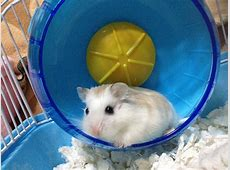
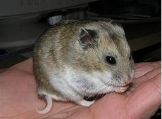
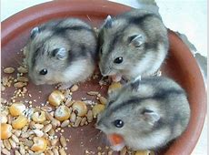
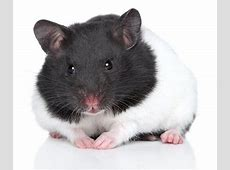
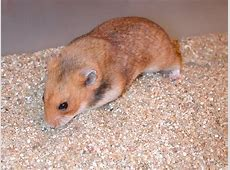
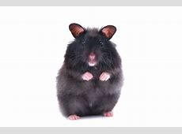

Shop for Hamsters

Roborovski Dwarf Hamster
Roborovski Dwarfs are small and quick. Full grown they are only 4 inches, and they live to be 3 years old. Good in groups.

Chinese Dwarf are small and love to dig, climb, and run. Full grown they are only 4 inches, and they live to be 2-3 years old. Bad in groups.
Chinese Hamsters

Campbell's Russian Dwarf
Russian Dwarfs are generally small, only 3-5 inches full grown. They live to be 2-3 years old. They are fine both in groups and on their own.

Syrian Hamster (Panda)
Syrian Hamsters are larger, generally 6-7 inches long. They are the most common type of hamster and an ideal first pet. Do NOT keep them in groups!

Syrian Hamster (Golden)
Syrian Hamsters are larger, generally 6-7 inches long. They are the most common type of hamster and an ideal first pet. Do NOT keep them in groups!

Syrian Hamster (Black Bear)
Syrian Hamsters are larger, generally 6-7 inches long. They are the most common type of hamster and an ideal first pet. Do NOT keep them in groups!